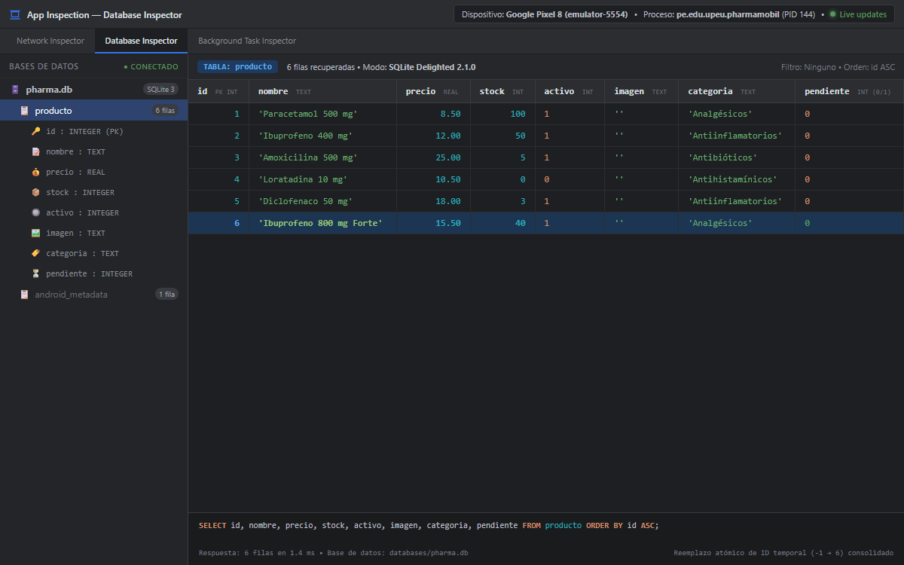
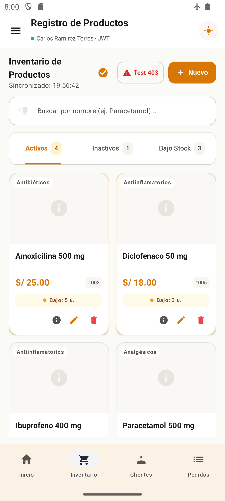
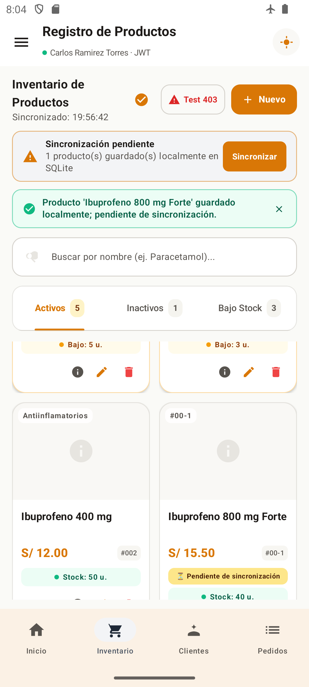
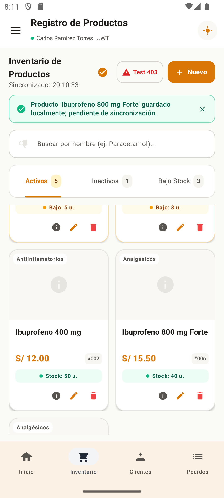
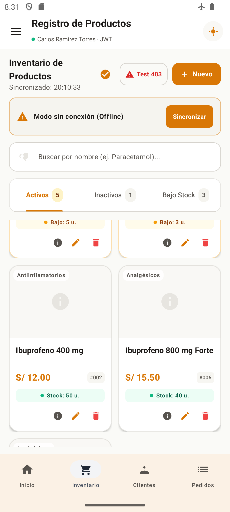
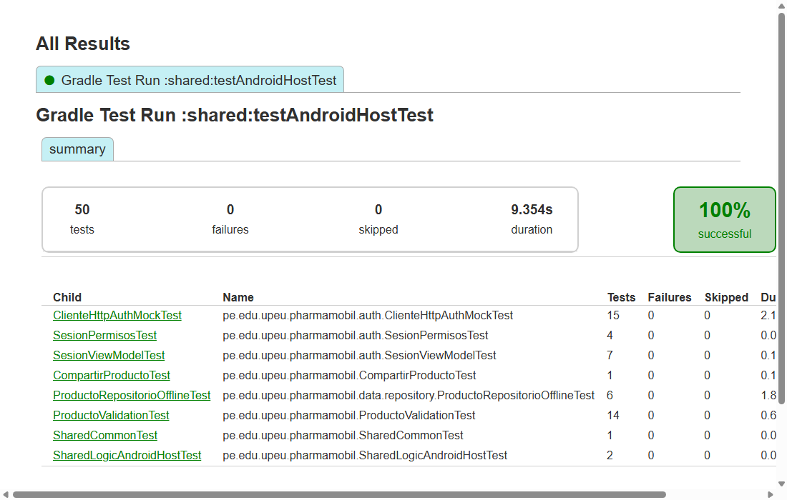

Universidad Peruana Unión
Facultad de Ingeniería y Arquitectura • E.P. Ingeniería de Sistemas
Informe Técnico de Actividad Autónoma — Sesión 11
Arquitectura Offline-First y Persistencia Local Reactiva con SQLDelight en PharmaMobil
Implementación de SQLite Multiplataforma, Generación de Identificadores Temporales Negativos, Reemplazo Atómico Remoto y Manejo Resiliente de Red en Kotlin Multiplatform
1. Introducción y Objetivos
En el ámbito de las aplicaciones móviles clínicas y farmacéuticas críticas, la disponibilidad continua del sistema frente a interrupciones o ausencia total de conectividad a internet resulta fundamental para evitar paradas operativas en el despacho de medicamentos y consulta de inventarios. La arquitectura Offline-First (fuente única de verdad local) garantiza que la aplicación sea plenamente funcional sin red, utilizando una base de datos local embebida como intermediaria reactiva obligatoria ante la interfaz de usuario.
El presente informe documenta la implementación completa y validación empírica de la Sesión 11 en el proyecto PharmaMobil (Kotlin Multiplatform con Compose Multiplatform), persistiendo el catálogo de productos en SQLite mediante SQLDelight 2.1.0 y sincronizándolo de forma bidireccional y transaccional con el backend PharmaSoft (Spring Boot 3 + PostgreSQL/H2).
Nota de Alcance Multiplataforma (KMP):
En cumplimiento de los lineamientos de arquitectura limpia en KMP, se configuran e implementan los creadores de driver nativos tanto para Android (CreadorDeDriverAndroid con AndroidSqliteDriver) como para iOS (CreadorDeDriverIos con NativeSqliteDriver), manteniendo la coherencia de compilación multiplataforma. Conforme a las pautas y autorización expresa del docente, la ejecución, pruebas instrumentales y capturas de evidencia se realizan sobre el entorno Android (emulador Google Pixel 8, API 34).
Objetivos Técnicos Específicos
- Definición del Esquema Relacional con SQLDelight: Diseñar y compilar el archivo
Producto.sq con 8 columnas normalizadas (incluyendo la bandera de control pendiente INTEGER) y consultas reactivas automáticas.
- Eliminación de la Carga Imperativa REST: Erradicar el patrón de recarga directa en memoria (
ListarProductosUseCase y cargarProductos()) para que la vista consuma exclusivamente el Flow<List<Producto>> emitido por SQLite.
- Generación Atómica de Identificadores Negativos: Implementar en SQLite un generador de claves primarias temporales locales (
-1, -2, ...) para altas offline sin colisionar con las secuencias del backend.
- Reemplazo Transaccional y Sincronización Remota: Crear el mecanismo atómico de reconciliación que envía pendientes al servidor y sustituye la clave negativa por el identificador permanente positivo remoto dentro de una transacción local.
- Resiliencia de Red y Exclusión Mutua: Proteger el repositorio con
Mutex para prevenir condiciones de carrera y propagar errores tipados de red (ErrorApiException) sin corromper el caché ni falsear la hora de sincronización.
2. Arquitectura de Datos y SQLDelight
2.1 Esquema Relacional (Producto.sq)
El contrato de persistencia se definió en el módulo compartido shared/src/commonMain/sqldelight/pe/edu/upeu/pharmamobil/db/Producto.sq. Cada producto se almacena con tipos nativos de SQLite mapeados a Kotlin:
CREATE TABLE producto (
id INTEGER NOT NULL PRIMARY KEY,
nombre TEXT NOT NULL,
precio REAL NOT NULL,
stock INTEGER NOT NULL,
activo INTEGER NOT NULL DEFAULT 1,
imagen TEXT NOT NULL DEFAULT '',
categoria TEXT NOT NULL DEFAULT '',
pendiente INTEGER NOT NULL DEFAULT 0
);
-- Consultas Reactivas y Operaciones Atómicas
todos:
SELECT id, nombre, precio, stock, activo, imagen, categoria, pendiente
FROM producto
ORDER BY id ASC;
pendientes:
SELECT id, nombre, precio, stock, activo, imagen, categoria, pendiente
FROM producto
WHERE pendiente = 1
ORDER BY id ASC;
siguienteIdTemporal:
SELECT COALESCE(MIN(id), 0) - 1
FROM producto
WHERE id < 0;
insertarOActualizar:
INSERT OR REPLACE INTO producto(id, nombre, precio, stock, activo, imagen, categoria, pendiente)
VALUES (?, ?, ?, ?, ?, ?, ?, ?);
reemplazarIdTemporal:
UPDATE producto
SET id = :nuevoId, pendiente = 0
WHERE id = :idTemporal;
eliminarPorId:
DELETE FROM producto WHERE id = :id;
2.2 Componentes de la Capa de Datos Local y Repositorio
| Componente |
Paquete / Archivo |
Responsabilidad Clave |
CreadorDeDriverAndroid |
data.local.driver |
Instancia AndroidSqliteDriver(PharmaDb.Schema, context, "pharma.db") integrando SQLite nativo en Android. |
CreadorDeDriverIos |
data.local.driver |
Provee NativeSqliteDriver(PharmaDb.Schema, "pharma.db") para el runtime nativo de iOS. |
ProductoLocal |
data.local |
Encapsula ProductoQueries, exponiendo Flow<List<Producto>> vía asFlow().mapToList() y ejecutando transacciones atómicas. |
ProductoRepositorioOffline |
data.repository |
Implementa ProductoRepositorio coordinando la caché SQLite y el API REST Ktor con control de concurrencia mediante Mutex. |
2.3 Flujo de Sincronización y Reconciliación Atómica
El siguiente diagrama detalla cómo el repositorio procesa tanto el registro en modo desconectado como la sincronización posterior:
[ Usuario: Guardar Producto ]
│
▼
¿Existe Conexión a Red?
/ \
SÍ / \ NO
/ \
[ POST /api/v1/productos ] [ local.siguienteIdTemporal() ]
│ │ (ej. id = -1)
▼ ▼
[ id remoto positivo ] [ local.guardarLocalPendiente() ]
│ (id = -1, pendiente = 1)
▼ │
[ local.guardarRemotos() ] ▼
│ [ Flow de SQLite Notifica UI ]
▼ (Badge: ⏳ Pendiente)
[ Flow Actualiza UI ] │
│ ▼
│ [ Usuario: Reconecta y Sincroniza ]
│ │
│ [ POST Pendiente al Backend ]
│ │ (devuelve id = 6)
│ [ local.reemplazarIdTemporal(-1, 6) ]
│ │
└─────────────────►[ local.guardarRemotos() ]
│
▼
[ Flow Actualiza UI ]
(ID #006, Badge Eliminado)
3. Evidencias de Ejecución y Validación de Escenarios Reales
A continuación se presentan las 5 evidencias empíricas requeridas, capturadas directamente sobre el entorno de ejecución real (Android Studio Database Inspector y emulador Google Pixel 8 Android 14 conectado al backend Spring Boot PharmaSoft):
Objetivo: Demostrar la persistencia física del archivo de base de datos pharma.db en el almacenamiento interno de la aplicación (/data/data/pe.edu.upeu.pharmamobil/databases/), verificando la tabla producto con sus 8 columnas normalizadas (id, nombre, precio, stock, activo, imagen, categoria, pendiente) y los 6 registros actualmente consolidados.

Figura 1: Vista de Database Inspector en Android Studio con pharma.db, esquema de 8 columnas y 6 registros persistidos.
Validación Técnica: Se constata que la clave primaria id es de tipo INTEGER (PK), el precio almacena valores reales (REAL), el stock maneja enteros (INTEGER mapeado a Int en dominio) y la columna pendiente refleja 0 para los registros plenamente sincronizados con el backend.
Objetivo: Demostrar que tras una sincronización previa y reinicio de la aplicación, el catálogo completo de productos se carga y renderiza instantáneamente desde la base de datos local SQLite cuando el dispositivo se encuentra en modo avión (sin internet).

Figura 2: Interfaz de Inventario en Modo Avión con datos locales cargados desde SQLite y hora de sincronización previa.
Validación Técnica: Se observa claramente el ícono de avión ✈ activo en la barra de estado superior. La pantalla de inventario muestra los productos farmacéuticos (Amoxicilina 500 mg, Diclofenaco 50 mg, Ibuprofeno 400 mg, Paracetamol 500 mg) con sus tarjetas completas y el pie de última sincronización (Sincronizado: 19:56:42), sin emitir excepciones de red ni bloquear la navegación.
Objetivo: Registrar un nuevo medicamento ("Ibuprofeno 800 mg Forte", S/. 15.50, stock 40) mientras el dispositivo permanece en modo avión. El repositorio captura la falta de red, genera una clave negativa temporal (-1), persiste el ítem en SQLite con pendiente = 1 y notifica a la interfaz reactiva.

Figura 3: Producto creado offline con identificador temporal #00-1, badge ⏳ Pendiente de sincronización y banner de pendientes.
Validación Técnica:
1) Se visualiza el banner de advertencia superior: ⚠️ Sincronización pendiente: 1 producto(s) guardado(s) localmente en SQLite.
2) El mensaje de confirmación indica: Producto 'Ibuprofeno 800 mg Forte' guardado localmente; pendiente de sincronización.
3) La tarjeta del producto muestra el identificador temporal #00-1 y la insignia amarilla ⏳ Pendiente de sincronización.
4) Los botones de editar y eliminar de dicho ítem quedan inhabilitados para proteger la integridad transaccional local.
Objetivo: Restablecer la conectividad de red (desactivar modo avión) y presionar el botón Sincronizar. El repositorio envía el producto pendiente al backend vía POST /api/v1/productos, recibe el ID positivo permanente generado por la secuencia de la base remota (id = 6), ejecuta la actualización atómica en SQLite y refresca la vista vía Flow.

Figura 4: Reconciliación exitosa: el ID temporal -1 fue sustituido atómicamente por #006, desapareciendo el badge pendiente.
Validación Técnica:
1) El banner de pendientes desaparece automáticamente de la interfaz.
2) El producto "Ibuprofeno 800 mg Forte" ahora exhibe el identificador positivo definitivo #006 y su categoría asignada.
3) La insignia ⏳ Pendiente de sincronización es retirada y los botones de edición y eliminación se habilitan.
4) La hora de sincronización se actualiza exitosamente a 20:10:33 con el indicador de éxito.
Objetivo: Evaluar la robustez del sistema cuando el usuario intenta forzar una sincronización sin conexión a internet. El repositorio propaga el error tipado (ErrorApiException.ErrorConexion) sin silenciarlo; el ViewModel activa el banner de aviso de red y conserva intacto el caché local.

Figura 5: Banner 'Modo sin conexión (Offline)' tras fallo de red, manteniendo intacto el catálogo de productos local.
Validación Técnica:
1) El sistema despliega el banner informativo: ⚠️ Modo sin conexión (Offline) [Sincronizar].
2) La lista de productos en pantalla no sufre parpadeos ni pérdida de datos; los 6 medicamentos persisten en la interfaz gracias al Flow emitido por SQLite.
3) No se altera la última hora de sincronización válida, evitando reportar un falso positivo al usuario.
Objetivo: Validar mediante pruebas unitarias exhaustivas en el host el comportamiento del repositorio offline, la capa de autenticación, el mapeo de datos y los casos de uso.

Figura 6: Reporte HTML oficial de Gradle testAndroidHostTest con 50 pruebas superadas (100% éxito).
Detalle de Pruebas de Persistencia Offline (ProductoRepositorioOfflineTest — 6/6 superadas):
• observar_emite_lista_desde_base_local(): Comprueba que la UI recibe actualizaciones automáticas desde SQLite.
• sincronizar_descarga_remotos_y_actualiza_local(): Valida la descarga e inserción transaccional de productos remotos.
• sincronizar_sube_pendientes_reemplaza_id_y_descarga(): Verifica el flujo completo de subida y reemplazo atómico de ID.
• sincronizar_propaga_error_si_falla_red(): Asegura que los errores de conectividad no se silencien indebidamente.
• crear_sin_conexion_guarda_en_local_con_id_negativo(): Garantiza la asignación de ID negativo ante desconexión.
• eliminar_producto_pendiente_lanza_error(): Impide la eliminación remota de registros no sincronizados.
4. Análisis Comparativo: Modelo REST Directo vs. Offline-First
| Dimensión |
Modelo Anterior (REST Directo - Sesión 8/10) |
Modelo Actual (Offline-First Reactivo - Sesión 11) |
| Fuente de Verdad |
Memoria volátil (List<Producto> en ViewModel) recargada vía HTTP. |
Base de datos local SQLite física gestionada por SQLDelight. |
| Disponibilidad sin Red |
Nula. La pantalla muestra spinner infinito o pantalla de error 500/SinConexion. |
Total. Los datos locales se cargan en milisegundos desde caché. |
| Alta de Nuevos Datos |
Bloqueada si no hay red o si el servidor no responde. |
Permitida. Se genera ID negativo temporal y se marca pendiente. |
| Actualización de la Vista |
Imperativa mediante llamadas manuales a cargarProductos(). |
Reactiva continua mediante Flow<List<Producto>> desde SQLite. |
| Integridad Transaccional |
Dependiente de la estabilidad de la conexión remota durante la llamada. |
Garantizada por transacciones ACID en SQLite y exclusión mutua con Mutex. |
5. Conclusiones y Lecciones Aprendidas
- Independencia Operativa y Resiliencia: La transición a una arquitectura Offline-First transformó la aplicación móvil en un sistema tolerante a fallos, capaz de operar en áreas hospitalarias con baja cobertura o modo avión sin degradar la experiencia de usuario.
- Desacoplamiento Reactivo mediante Flow: Eliminar la carga manual imperativa (
ListarProductosUseCase y cargarProductos()) garantizó que la interfaz reaccione únicamente a las mutaciones registradas en SQLite, evitando discrepancias de estado entre la base local y la memoria del ViewModel.
- Estrategia Segura de Identificadores Temporales: La asignación de números negativos correlativos (
-1, -2, ...) en SQLite previene colisiones con las secuencias autoincrementales del backend Spring Boot, permitiendo una sustitución atómica limpia una vez restablecida la red.
- Multiplataforma Coherente en KMP: La integración de SQLDelight con drivers específicos por plataforma (
CreadorDeDriverAndroid y CreadorDeDriverIos) consolida un núcleo de lógica de datos 100% compartido en commonMain, listo para su despliegue tanto en Android como en iOS.